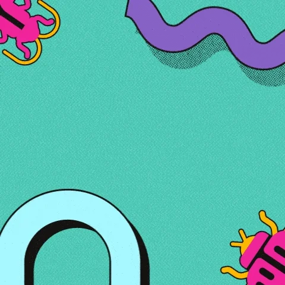

Arrange Pastries
In this exercise, my task was to debug the CSS for the CodeSpace Cafe to ensure that the pastries were displayed neatly in a line. The initial problem was that the HTML included a counter and four pastry elements, but they were improperly spaced and overlapping each other.

To address this issue, I carefully analyzed the CSS properties that were causing the overlap. By identifying and fixing these properties, I was able to adjust the layout so that the pastries were positioned in a straight line on the counter. The final result achieved even spacing between each pastry, creating a visually appealing and organized display.
This project demonstrates my skills in troubleshooting and refining CSS to improve layout and presentation in web design.